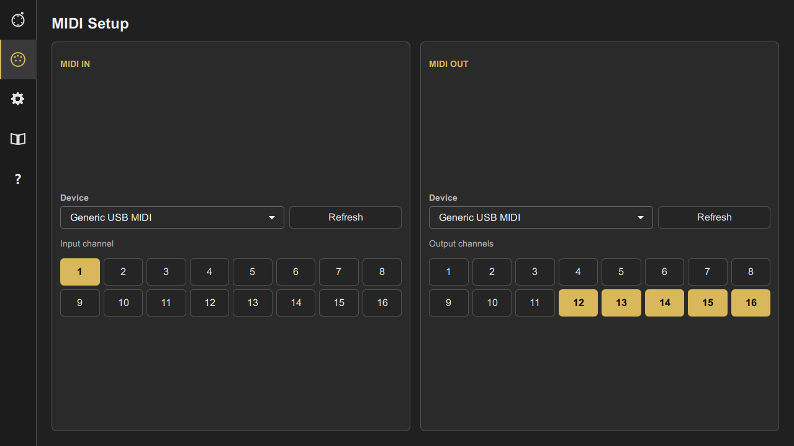
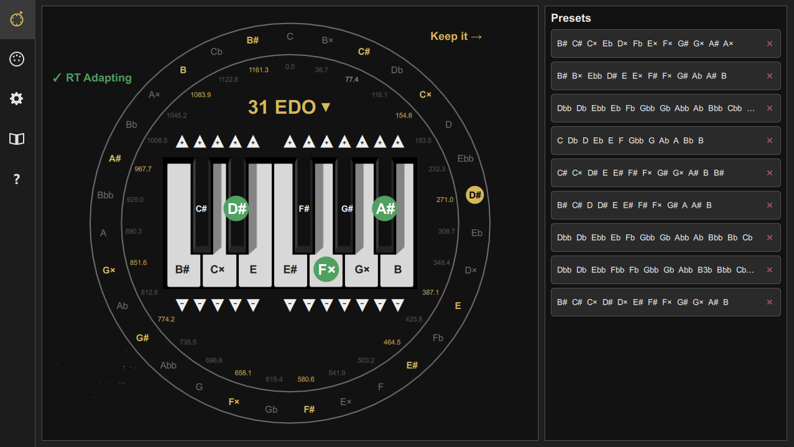
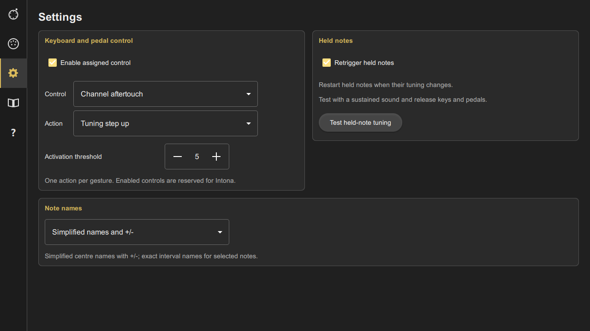

Intona User Manual
Introduction
Intona makes the pitches of alternative tuning systems playable from a standard MIDI keyboard with twelve keys per octave. It can interpret your performance and adapt the tuning automatically, or let you choose your own tuning configurations while playing.
What is an N-EDO?
N-EDO means N equal divisions of the octave: the octave is divided into N steps of equal musical size. An octave doubles the frequency, so each step multiplies the frequency by the same ratio, 2 raised to the power 1/N. In cents, each step measures 1200/N. The term N-TET (N-tone equal temperament) is also commonly used for these octave-based systems.
In 12-EDO each step is a 100-cent semitone. In 31-EDO each step is approximately 38.71 cents, and there are 31 distinct pitches per octave. The physical keyboard still has twelve keys per octave: Intona determines which twelve of those pitches are currently assigned to them.
Why only some EDOs between 12 and 64?
Intona includes only temperaments that are cyclic under their chosen fifth. Starting from any pitch and repeatedly moving by that fifth visits all N pitches before returning to the starting pitch class on the Nth step. Octave differences are ignored here. Repeated fourths traverse the same cycle in the opposite direction.
Mathematically, if an octave contains N steps and the chosen fifth contains q steps, the temperament is cyclic if and only if N and q are coprime: gcd(N, q) = 1. Neither number needs to be prime on its own; they must have no common divisor greater than one. In general, the cycle closes after N / gcd(N, q) fifths. The fourth has N - q steps and satisfies the same coprimality condition.
The important condition is that the cycle does not return earlier. For example, in 24-EDO the usual fifth spans 14 steps and the fourth spans 10. Either cycle returns to its starting pitch class after only twelve jumps, leaving half the pitches unvisited. In this sense, 24-EDO consists of two separate 12-EDO cycles offset by a quarter-tone (50 cents). It therefore does not meet Intona's selection criterion.
This choice makes it possible to navigate through all N pitches by moving the tuning centre along a single cycle of fifths, while continuing to play on a conventional twelve-key keyboard. It is the foundation of RT Adapting: a MIDI note number identifies a key, but does not specify its musical spelling. For example, note number 63, commonly labelled D#4/Eb4, does not tell Intona whether D# or Eb is intended. Intona uses the musical context to choose an interpretation and its corresponding pitch in the selected EDO.
Interval sizes in the supported EDOs
All values below are numbers of steps in the selected EDO. The chromatic semitone is an augmented unison (for example, C to C#); the diatonic semitone is a minor second (for example, C to Db). Their sum is a whole tone. A fifth consists of three whole tones and one diatonic semitone.
| EDO | Chromatic semitone | Diatonic semitone | Whole tone | Fifth | Octave |
|---|---|---|---|---|---|
| 17-EDO | 2 | 1 | 3 | 10 | 17 |
| 19-EDO | 1 | 2 | 3 | 11 | 19 |
| 22-EDO | 3 | 1 | 4 | 13 | 22 |
| 26-EDO | 1 | 3 | 4 | 15 | 26 |
| 27-EDO | 4 | 1 | 5 | 16 | 27 |
| 29-EDO | 3 | 2 | 5 | 17 | 29 |
| 31-EDO | 2 | 3 | 5 | 18 | 31 |
| 32-EDO | 5 | 1 | 6 | 19 | 32 |
| 33-EDO | 1 | 4 | 5 | 19 | 33 |
| 37-EDO | 6 | 1 | 7 | 22 | 37 |
| 39-EDO | 5 | 2 | 7 | 23 | 39 |
| 40-EDO | 1 | 5 | 6 | 23 | 40 |
| 41-EDO | 4 | 3 | 7 | 24 | 41 |
| 42-EDO | 7 | 1 | 8 | 25 | 42 |
| 43-EDO | 3 | 4 | 7 | 25 | 43 |
| 45-EDO | 2 | 5 | 7 | 26 | 45 |
| 46-EDO | 5 | 3 | 8 | 27 | 46 |
| 47-EDO | 1 | 6 | 7 | 27 | 47 |
| 49-EDO | 7 | 2 | 9 | 29 | 49 |
| 50-EDO | 3 | 5 | 8 | 29 | 50 |
| 53-EDO | 5 | 4 | 9 | 31 | 53 |
| 55-EDO | 4 | 5 | 9 | 32 | 55 |
| 56-EDO | 7 | 3 | 10 | 33 | 56 |
| 59-EDO | 2 | 7 | 9 | 34 | 59 |
| 61-EDO | 8 | 3 | 11 | 36 | 61 |
| 63-EDO | 7 | 4 | 11 | 37 | 63 |
| 64-EDO | 3 | 7 | 10 | 37 | 64 |
For an octave of N steps and a fifth of q steps, the chromatic semitone is 7q - 4N, the diatonic semitone is 3N - 5q, and the whole tone is 2q - N. These relationships preserve the interval spellings generated by the cycle of fifths; the two types of semitone need not have the same size.
Two ways to use Intona
Adaptive and Microtonal describe two ways of performing with Intona. Use the RT Adapting control to enable automatic interpretation, or disable it to take direct control of the tuning.
Adaptive: interpreting a tonal performance
This approach is particularly useful for tonal repertoire written before 12-EDO became the prevailing keyboard tuning. In tunings such as meantone, enharmonic spellings such as Db and C# or D# and Eb need not denote the same sounding pitch. Their distinction matters musically; enharmonic does not necessarily mean identical in pitch.
With RT Adapting enabled, Intona analyses the incoming performance and adjusts the selection of twelve pitches to supply the notes suggested by the musical context. You play the familiar keyboard while Intona handles changes of interpretation.
Intona does not reproduce arbitrary historical unequal temperaments. However, some of its EDOs closely approximate historical tunings. In particular, 31-EDO is a very close approximation to quarter-comma meantone. The 31-tone tradition has roots in the sixteenth-century work of Nicola Vicentino and was developed mathematically by Christiaan Huygens in the seventeenth century. It also has a history of instrument building: the Fokker organ, built in 1950, has manuals providing 31 pitches per octave. Early extended meantone keyboards and exact 31-EDO should not all be assumed to use identical tuning.
Historical background: Huygens-Fokker Foundation: tuning systems and the Fokker organ.
Microtonal: choosing your own pitch configurations
In this approach, turn RT Adapting off and choose the configurations needed for your performance yourself. A preset is an ordered set of twelve pitch assignments, one for each key of the octave, drawn from the N pitches of the selected EDO. Prepare these configurations and recall them in real time from the Presets panel or with an assigned keyboard or pedal control.
This allows music that uses microtonal intervals directly, beyond the interpretations available to automatic adaptation. For example, two keys can be assigned adjacent steps of the selected EDO. When N is greater than twelve, their distance is smaller than a 12-EDO semitone: in 31-EDO it is approximately 38.71 cents. The preset determines these relationships, without Intona attempting to reinterpret them through scales or triads.
1. Before You Start
Required MIDI Configuration
Intona is a real-time MIDI processor placed between a MIDI performance source and a sound generator. Before using it, configure the sending and receiving devices so that all notes intended for retuning pass through Intona before reaching the sound generator.
You need:
- one dedicated control track, transmitting on one MIDI channel;
- a MIDI input port through which Intona receives that track;
- a MIDI output port connected to the receiving instrument or application;
- one or more output channels configured to produce the final sound;
- a receiving instrument that supports the MIDI tuning messages used by Intona.
The Control Track
The control track is the single performance source analysed by Intona. It may come from a keyboard, workstation, sequencer, DAW track or another MIDI application.
Configure this track to transmit on the channel selected as Input channel in Intona. Intona ignores note data received on the other input channels.
Only one control track should feed the selected input channel. If several independent tracks transmit through the same port and channel, Intona cannot distinguish them: their notes become part of the same musical context and are analysed as one performance.
Local Off and Direct Monitoring
The control track must send MIDI data to Intona without producing the final sound directly.
When the sending keyboard and the receiving sound generator are part of the same instrument, set the control track to Local Off, or use the equivalent MIDI-routing option provided by the instrument. The keyboard performance will then follow this path:
Control track
→ Intona
→ tuned output channels
→ sound generatorThe MIDI tuning message generated by Intona contains a channel mask identifying the selected output channels. In the intended configuration, these are the channels of the parts that produce the final sound; the control track is not itself one of those sounding parts.
If the control track also plays the instrument locally, its notes bypass the processing performed by Intona. They may therefore be heard with the instrument's ordinary tuning, while the notes retransmitted by Intona are heard on the selected, retuned output channels. The result may include doubled notes, conflicting intonations and an incorrect response to real-time tuning changes.
Directly played notes may also reach the sound generator before Intona has analysed them and sent the required tuning update.
When using a DAW or another MIDI application, disable any direct MIDI monitoring or routing that bypasses Intona.
A controller that has no internal sound generator does not require Local Off, but its MIDI data must still be routed to Intona rather than directly to the receiving instrument.
Why the Notes Must Pass Through Intona
For real-time adaptive tuning, sending tuning SysEx messages in the background is not sufficient. Intona must control the order in which tuning information and note events reach the receiving instrument.
For every incoming note, Intona may need to:
- analyse the current musical context;
- select or update the tuning;
- send the required MIDI tuning message;
- send the Note On to the selected output channels.
If the receiving instrument plays a note before receiving the tuning update, that note begins with the previous tuning. Many sound generators apply newly received tuning information only to subsequent notes and do not retune notes that are already sounding. With such instruments, the entire note—not only its attack—remains at the previous pitch for its full duration.
Other instruments may update active voices when they receive a tuning message. Even in that case, the attack begins at the wrong pitch and the subsequent correction may be audible. The exact response depends on the receiving instrument, but neither behaviour is suitable for accurate real-time tuning.
Intona therefore receives each note first, sends any required tuning update, and only then retransmits the note to the selected output channels.
MIDI Input and Output Devices
The MIDI input and output devices may be either the same device or two different devices.
Using One Instrument
A multitimbral workstation or synthesizer can act both as the controller and as the sound generator. In this configuration:
- one track acts as the control track and is set to Local Off;
- Intona receives that track through the selected MIDI input port and channel;
- Intona sends the tuned performance back to one or more receiving parts through the selected MIDI output port and channels.
Make sure that MIDI data returned by the instrument is not routed back into Intona again, as this could create a MIDI loop.
Using Separate Devices
A master keyboard may provide the control performance while another synthesizer, sound module, software instrument or DAW produces the sound.
In this case, select the controller as the MIDI input device and the sound generator as the MIDI output device. Local Off is required only if the controller also has an internal sound engine that would otherwise play together with the tuned output.
Tuned Output Channels
Intona sends both tuning information and performance events to every selected output channel. These channels must correspond to the parts that produce the final sound.
The tuning SysEx message explicitly identifies these output channels. Channels that are not selected are not included in its channel mask and should not be expected to use the tuning generated by Intona.
Prepare the receiving parts on the instrument itself before playing. They must be able to receive the notes sent by Intona and respond correctly to its MIDI tuning messages.
Do not route the control track directly to these parts. The final sounding notes should come only from Intona.
Basic Setup Checklist
- Connect the MIDI source and the receiving sound generator to the computer, tablet or mobile device on which Intona is running.
- Prepare one control track and select its MIDI transmit channel.
- Set the control track to Local Off, or otherwise prevent it from producing or forwarding sound directly.
- Prepare the receiving part or parts on the desired output channels.
- Verify that the receiving instrument supports the required MIDI tuning messages.
- Select the MIDI input device and input channel in Intona.
- Select the MIDI output device and enable the required output channels.
- Check that playing the control track produces sound only through Intona.
- Verify that no MIDI loop has been created.
2. MIDI Setup

The MIDI Setup page is used to select the MIDI input and output devices and their respective channels.
The input-channel selector allows only one channel to be selected, because Intona analyses one control channel. The output-channel selector allows multiple channels to be selected, so that the tuned performance can be sent to several receiving parts.
MIDI IN
The MIDI IN section selects the device and channel used as the input source.
Device selects the MIDI input device.
Use this field to choose the keyboard, controller, sequencer port, virtual MIDI port, or external application that sends notes to Intona.
Input channel selects the MIDI channel that Intona listens to.
MIDI performance data received on this channel is processed by Intona; data received on the other input channels is ignored.
The Refresh button updates the list of available MIDI input devices. Use it after connecting a new MIDI device or after opening a virtual MIDI port.
MIDI OUT
The MIDI OUT section selects the MIDI output device and the active output channels.
Device selects the destination that receives the tuned MIDI output.
This may be a hardware synthesizer, a software instrument, a virtual MIDI port, or a MIDI input exposed by another application.
The numbered channel buttons from 1 to 16 select the active output channels.
Highlighted buttons identify the selected channels. Intona sends the tuned performance to every selected output channel. At least one output channel must be selected for notes to reach the sound generator.
The Refresh button updates the list of available MIDI output devices. Use it after connecting a MIDI device, starting a virtual MIDI driver, or opening a software instrument that exposes a MIDI input port.
MIDI device and channel selections are saved automatically and restored the next time Intona is started. If a previously selected device is no longer available, connect or start it and use Refresh to update the corresponding device list.
3. Tuning Fundamentals
Assigning the selected notes to the keyboard
When selecting a tuning centre, Intona keeps its twelve selected notes and orders them by pitch. It then chooses the octave rotation that minimises the sum of absolute distances in cents from the twelve standard 12-EDO keys.
If rotations have the same total distance, Intona first chooses the one with the smallest worst distance, then the one with the note on C closest to 0 or 1200 cents. The automatic adaptation uses the same assignments. Previously saved presets retain their explicit keyboard assignments; selecting a tuning centre again applies the new rule.
Note naming conventions
Open Settings and choose a convention under Note names. The choice is saved automatically and applies to the tuning circle, keyboard and preset labels.
Cycle of fifths is the default. It preserves the original spelling with as many sharps or flats as required by the current interpretation and tuning centre.
Simplified names and +/- chooses the tuning-centre name using the fewest symbols. Reference names are the seven natural notes and C#, Db, D#, Eb, F#, Gb, G#, Ab, A# and Bb. Each + or - means one step above or below the reference in the current EDO, including across the octave boundary. Each accidental or step sign counts as one symbol. Ties favour fewer accidentals, then the reference closest to the original spelling on the cycle of fifths.
Names with one or two accidentals are no longer preserved automatically. In 31-EDO, the simplified sequence is: C, C+, C#, Db, D-, D, D+, D#, Eb, E-, E, E+, F-, F, F+, F#, Gb, G-, G, G+, G#, Ab, A-, A, A+, A#, Bb, B-, B, B+, C-, then C in the next octave. The dotted convention uses exactly the same names, with dots replacing the step signs.
The other eleven selected notes are spelled relative to the chosen tuning centre: minor second, major second, minor third, major third, perfect fourth, augmented fourth, perfect fifth, minor sixth, major sixth, minor seventh and major seventh. Exact interval spelling takes precedence over independent simplification and may require other accidentals. With centre C, the selected names are C, Db, D, Eb, E, F, F#, G, Ab, A, Bb and B.
Every selected degree inherits the centre's step modifier. For example, the major third of C- is E-. Notes outside the selected twelve are simplified independently. Custom configurations without a tuning centre use this independent rule for every note. Preset labels use each preset's own tuning centre.
Changing this preference changes labels only; it does not change pitches, MIDI tuning, tuning centres or saved preset values.
4. Tuning Surface

The Tuning Surface is the main performance view of Intona. It shows how the twelve conventional pitch classes are mapped onto the currently selected equal division of the octave and allows that mapping to be inspected and edited in real time.
The central keyboard represents the twelve conventional pitch classes. Each key displays the pitch currently assigned to it within the selected EDO.
The surrounding circle represents all the steps of the current EDO. Highlighted positions identify the twelve pitches assigned to the keyboard, while the remaining positions show the other available steps of the tuning system.
The current tuning centre is highlighted by a gold disc with a black note name on the circle. There are no separate tuning-centre, key or chord labels or external indicator dots.
Tuning circle
The large circular display represents the selected equal division of the octave.
Each position around the circle corresponds to a step of the tuning system.
The note names show how the steps are currently interpreted in relation to the selected tuning centre and note naming system.
The smaller numerical values show the corresponding pitch positions in cents.
EDO selector
The central selector shows the current equal division of the octave, for example:
31 EDO
EDO means “Equal Division of the Octave”.
In an EDO tuning, the octave is divided into a fixed number of equal steps.
For example, in 31 EDO the octave is divided into 31 equal parts. Each step is approximately 38.71 cents.
Changing the EDO changes the available pitch grid and the relationship between note names and tuning steps.
Central keyboard
The central keyboard shows the twelve conventional pitch classes.
It acts as a familiar reference inside the microtonal tuning system.
The displayed pitch classes help relate the current EDO tuning to conventional keyboard note names.
Step controls
The plus and minus controls above and below the keyboard allow pitch classes to be shifted by tuning steps.
They provide a direct way to adjust the mapping between conventional pitch classes and the selected EDO grid.
This is useful when exploring enharmonic alternatives or when adapting the current tuning layout to a specific harmonic context.
Tuning centre
The current tuning centre is shown on the circle as a black note name inside a gold disc.
Choosing a tuning centre selects twelve specific pitch classes from the N available in the current N-EDO. Together, these pitches allow you to play the major, natural minor, melodic minor and harmonic minor scales rooted on the tuning centre, its subdominant and its dominant.
For example, choosing C as the tuning centre makes the following notes available: C, Db, D, Eb, E, F, F#, G, Ab, A, Bb and B. These provide all the notes needed for those four scale types on C, its subdominant F and its dominant G.
Real-Time Adapting
The RT Adapting indicator shows whether real-time adaptive tuning is active.
Real-time adapting uses scales and major/minor triads, and evaluates incoming notes immediately. It uses the new note, all distinct held note classes, and, if needed, the most recently released distinct notes to form a context for harmonic analysis and determines the most suitable intonations for the 12 notes by identifying the appropriate Tuning centre.
Real-time Adapting interprets the notes you play and adjusts their tuning to match their musical spelling. For example, starting with C as the tuning centre, playing C, F and Ab together produces a correctly tuned F minor triad. If you instead play B, E and the Ab/G# key together, Intona interprets that last note as G# and moves the tuning centre accordingly, producing a correctly tuned E major triad.
Adaptation also works with melodic passages, without simultaneous chords. Starting from C as the tuning centre, playing scales, scale fragments or arpeggios in E major progressively provides the evidence needed to reinterpret the initially available Db, Eb and Ab as C#, D# and G#, giving those passages the appropriate tuning.
You may, however, want to guide the interpretation in a different direction. Besides using the assigned keyboard or pedal control to raise or lower held notes by one EDO step, you can use an established held note as a pivot. Its pitch and spelling remain fixed, and Intona interprets the following notes consistently with it.
For example, start again with C as the tuning centre, where the Ab/G# key is initially tuned as Ab. Play that note first and hold it until its interpretation is established (70 ms is enough, so it means "just a little bit" before the other simultaneous ones), then add B and E. Intona recognises the keyboard shape of a major triad, but the held Ab now acts as a pivot. Instead of changing it to G#, Intona interprets the other two notes as Cb and Fb, producing a correctly tuned Fb major triad: Fb–Ab–Cb.
The same three keys can therefore produce E major or Fb major. Holding an established pivot gives you a way to guide that choice through your playing.
When real-time adapting is disabled, the current tuning layout remains fixed until the user changes it manually.
Keyboard and pedal control
Click the check mark or cross to enable or disable the assigned control. Click the adjacent text to reverse its direction: step up/down or next/previous preset. Reversing the direction does not enable a disabled control; when disabled, its action is shown as off. Choose the control and action in Settings.
Keep it
Click Keep it to save the current tuning configuration as a preset for the selected EDO. You can recall it later from the Presets panel.
Presets
The Presets panel on the right contains your saved tuning configurations for the current EDO. Click a row to recall that configuration; use its remove button to delete it.
Presets provide an alternative to automatic adaptation. They let you prepare and recall tunings that the adaptive logic, based on scales and major/minor triads, would not select. Disable RT Adapting when you want to use these configurations without automatic changes. You can also assign a keyboard or pedal control to move to the next or previous preset in Settings.
The current selection of twelve pitches is shown by the gold highlights on the tuning circle and by the note names on the keyboard. The Presets panel stores configurations chosen by you; it does not list suggested interpretations of the music you are playing.
5. Settings

Use this page to assign a keyboard or pedal control, choose how held notes respond to tuning changes, and select the note naming convention. These preferences are saved automatically for the next session.
Keyboard and pedal control
Select the MIDI control and its action: tuning step up/down, or next/previous preset. Available controls include channel aftertouch, polyphonic aftertouch, pitch bend up/down and CC 0–119, including modulation, expression, foot controller and sustain/sostenuto/soft pedals. Choose the CC transmitted by your keyboard or pedal; Intona cannot determine the physical pedal from the MIDI message alone. The assignment, activation and threshold are saved automatically.
Each gesture performs one action when its value reaches the activation threshold. Return to half that threshold or lower to rearm it. Pitch bend uses distance from the centre in the selected direction. Continuous pressure or pedal movement above the threshold does not repeat the action.
Polyphonic aftertouch steps only the addressed held key. Other controls step every held key once, even with octave doublings. Intona uses one tuning per pitch class, so all octaves share the change. Preset actions affect the whole tuning and cycle through the current EDO's saved presets; with no preset selected, next starts at the first and previous at the last.
When enabled, the assigned control is reserved for Intona and is not forwarded to the instrument. When disabled, that control passes through normally. The fine-resolution companion of an assigned coarse CC is reserved too. MIDI channel-mode messages are not assignable. This is MIDI 1.0 polyphonic key pressure on the selected input channel, not MPE.
Held notes and instrument test
Retrigger held notes controls how adaptive tuning and MIDI-control step actions update notes that are already sounding. It is enabled initially and saved automatically. When enabled, Intona sends Note Off, tuning and Note On for affected notes. When disabled, it sends only tuning: the instrument may update held notes itself, or apply the new pitch at the next attack. The interpretation rules and pivot protection stay the same.
Test held-note tuning plays a two-second note on the selected MIDI output channels and changes its tuning by about 80 cents (almost a semitone), upwards or downwards, halfway through, without restarting it. This is a clear change of note, not a subtle nuance. Release all keys and the sustain pedal first, and use a sustained sound such as an organ. The original tuning is restored at the end. Choose “Yes, I heard the note change” or “No, I heard only one note”; the suggestion does not change your preference automatically. If you hear no sound, check the output connection and channels, then repeat the test.
You can stop the test at any time. Playing or changing the tuning or MIDI output interrupts it and restores the previous tuning where the connection is available. Test notes are not recorded as performance input.
If you heard the note change, the instrument can update sounding notes and you can disable Retrigger held notes. If you heard only one unchanged note, enable it so that Intona restarts notes that need retuning.
Note names
This setting changes the names shown in Intona; it does not change the tuning or keyboard mapping.
- Cycle of fifths: names follow the cycle of fifths using sharps and flats. Some EDOs and tuning centres require three or more accidentals.
- Simplified names and +/-: minimise the number of accidentals and step signs, preferring step signs when the total is equal. Each sign represents one step of the current EDO. The twelve selected notes preserve exact interval spelling relative to the centre.
- Simplified names with dots: uses the same spellings as Simplified names and +/-, replacing + with a dot above the note letter and - with a dot below it. Accidentals remain beside the letter. Inspired by Vicentino's dotted notation, Intona uses each dot to mean one step of the selected EDO, not a fixed number of cents. The selected notes retain their exact interval spellings relative to the tuning centre. This choice changes labels only, on the circle, keyboard and presets; it does not change the tuning.
Why Intona does not use quarter-tone accidentals
Intona uses sharps and flats, including double and, where necessary, higher-order accidentals, rather than quarter-tone symbols or other specialised microtonal signs. These symbols belong to different notational systems, and their meanings are not universally agreed upon. Applying them consistently across all the EDOs and tuning centres supported by Intona would therefore require additional conventions.
Names derived from the cycle of fifths preserve a consistent relationship between spelling and musical intervals across these systems. In the simplified naming mode, + and − provide an explicit alternative: each sign always indicates one step of the selected EDO, rather than a fixed fraction of a tone.